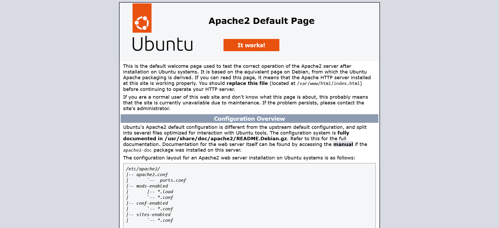
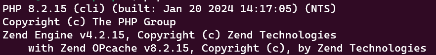
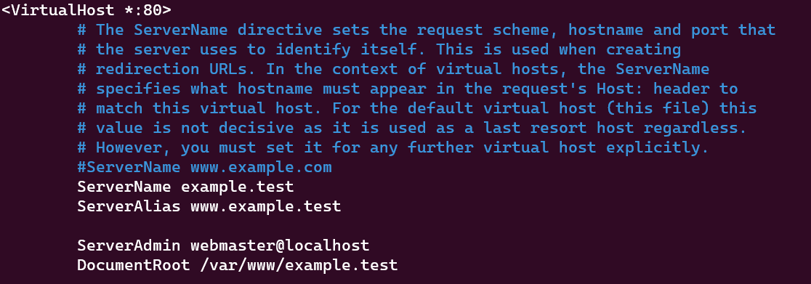
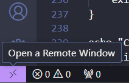

Introduction
LAMP (Linux, Apache, MySQL, PHP) is an open source software stack that is used for many of the modern webs most popular applications. Due to its continued popularity it is important as a web developer to understand how LAMP works and how it is setup. The documentation provided on this website will provide a step-by-step guide on how to get LAMP running on a local development environment.
How to install Apache
Apache Web Server is a free, open source, and cross platform web server software package that is used to host some of the webs most popular sites.
This section of the guide will assume that you are running the Ubuntu operating system either locally or through WSL (Windows Subsystem for Linux).
- Open up a terminal window
-
Type in the following command to ensure your packages are up-to-date:
sudo apt update -
Type in the follow command to install the Apache package:
sudo apt install apache2 - After installation is finished Ubuntu will start the web server automatically. You can confirm this by navigating to your localhost. You will know it was setup properly if you see the default apache welcome page. 
How to install PHP
PHP (PHP: Hypertext Preprocessor) is a general purpose scripting language that is commonly used to display dynamic content on a web page. It does this by retrieving information from a database hosted on a web server.
To get PHP running in our stack we will need to follow these steps:
-
In your terminal type the following command to add the latest repository of PHP to your packages:
sudo add-apt-repository ppa:ondrej/php -
Update your packages again:
sudo apt update -
Install PHP 8.2:
sudo apt install php8.2 -y -
Install the PHP Apache module:
sudo apt install libapache2-mod-php8.2 -y -
Install the PHP MySQL module:
sudo apt install php8.2-mysql -y -
Restart Apache to finish the setup of these modules:
sudo systemctl restart apache2 -
Confirm PHP was successfully installed by checking the version:
php --version
How to install MySQL
MySQL is an open-source RDBMS (Relational Database Management System) that uses the SQL (Structured Query Language) programming language. This is used to organize, retrieve, and store information for web pages.
Follow these commands to install MySQL:
-
Using your terminal type in the following command:
sudo apt install mysql-server -y -
Make sure it installed correctly by checking the version number:
mysql -V
Adding a new database to MySQL
-
Enter mysql using the terminal environment:
sudo mysql -
Type the following SQL command to create a new database:
CREATE DATABASE testDB;
Adding a new user to MySQL
-
Use the following SQL command to create a new user:
CREATE USER 'test'@'%' IDENTIFIED WITH mysql_native_password BY 'secret'; -
Grant the new user access to the database created in the previous section:
GRANT ALL ON testDB.* to 'test'@'%'; -
Exit mysql:
exit
How to configure a vhost in Apache
Vhosts (Virtual Hosts) are a way to connect a website to multiple domain names on a single web server. The scope of the guide will only cover how to do this through localhost.
To create a new vhost we will need to execute the commands below:
-
Navigate to the sites-available directory:
cd /etc/apache2/sites-available -
Create a new vhost file using the default configuration:
sudo cp 000-default.conf example.test.conf -
Open the new conf file we just created:
sudo nano example.test.conf -
Add the ServerName directive below the commented lines within the VirtualHost:
ServerName example.test -
Add the ServerAlias directive below the ServerName directive:
ServerAlias www.example.test - Edit the document root so that it points to /var/www/example.test.
- Your vhost should now look like the below image: 
- Save your changes with CTRL + O
-
Activate the new vhost:
sudo a2ensite example.test.conf -
Check for configuration errors:
sudo apache2ctl configtest -
Reload apache to apply our changes:
sudo systemctl reload apache2 -
Finally we will need to add some new host entries to our host file. Navigate to C:\Windows\System32\drivers\etc, open the host file using your preferred text editor, and add the following:
127.0.0.1 example.test 127.0.0.1 www.example.test ::1 example.test ::1 www.example.test - Save the changes
How to test your stack is working
With our LAMP stack installed and fully configured we can now test it to make sure everything is working correctly. This section will assume you are using Visual Studio Code with the WSL extension.
- Open up VSCode and connect to WSL by clicking the button at the bottom lefthand corner 
- Select Connect to WSL from the dropdown
- Click Open Folder and navigate to /var/www/
- Right click and create a new folder named example.test
- Right click the new folder and create a new file called index.php. Your file structure should look like the below image:
-
Add the following php code to the index.php file:
<?php $mysqli = new mysqli("localhost", "test", "secret", "testDB"); if ($mysqli->connect_errno) { echo "Failed to connect to MySQL: " . $mysqli->connect_error; exit(); } echo "Connected successfully to MySQL"; $mysqli->close(); - Save the changes to the index.php file
- Lastly, navigate to example.test or www.example.test. If everything is configured correctly the following page will display: